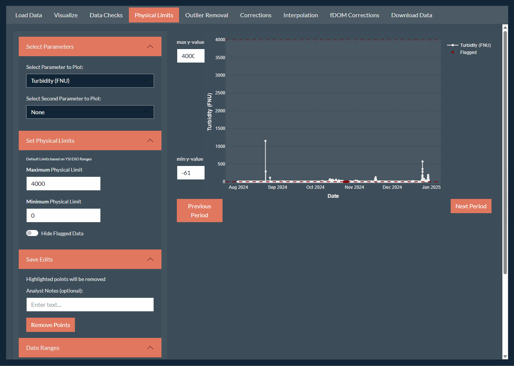
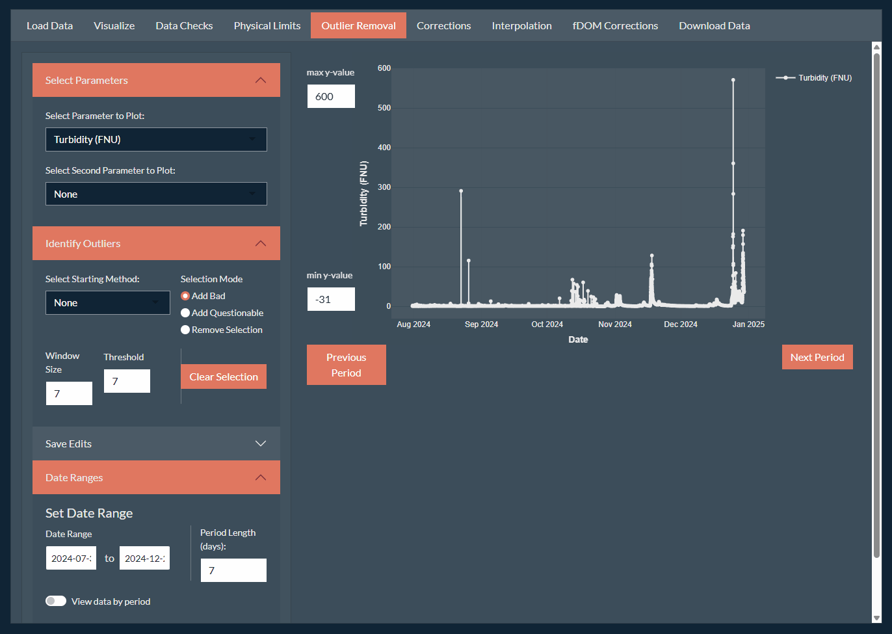
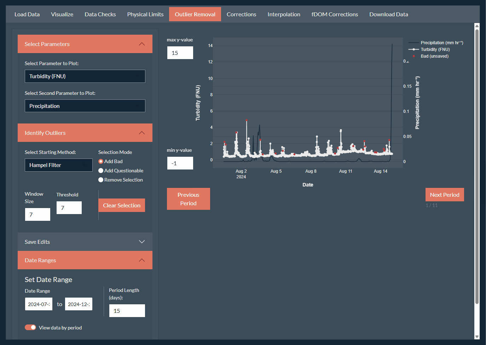
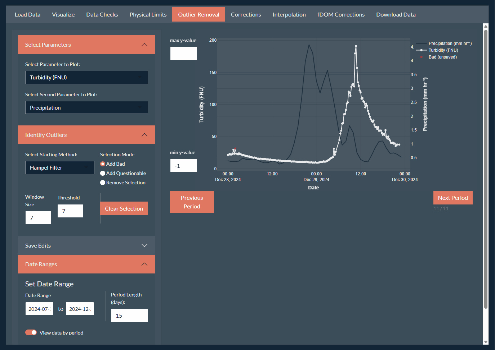
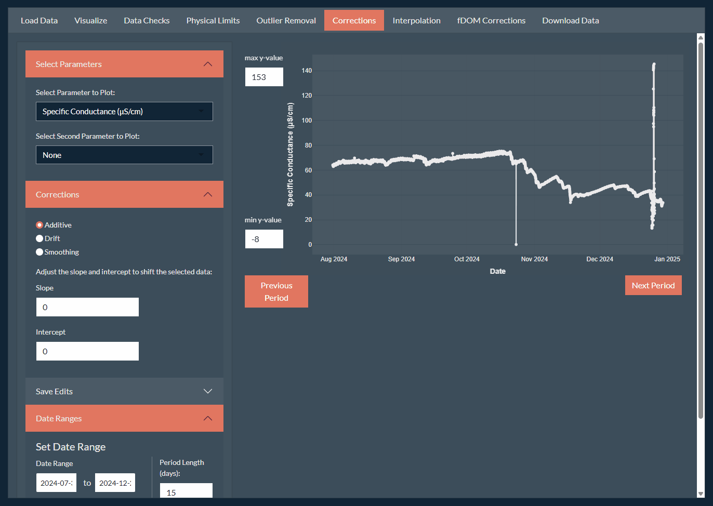
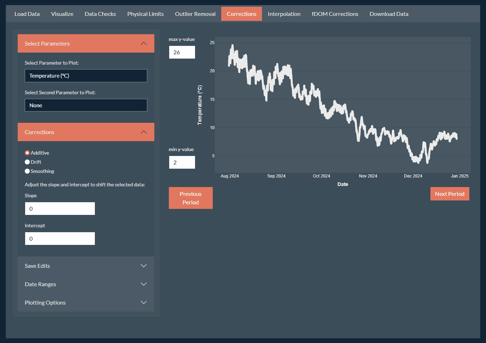
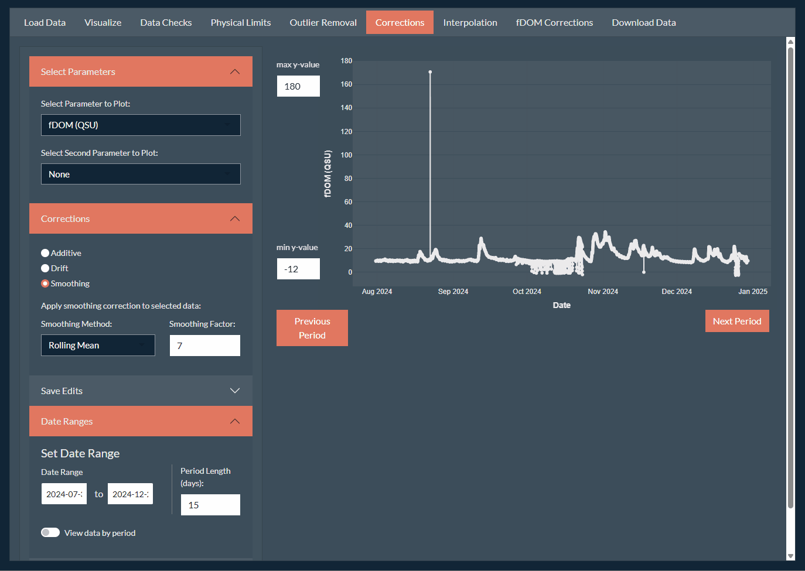
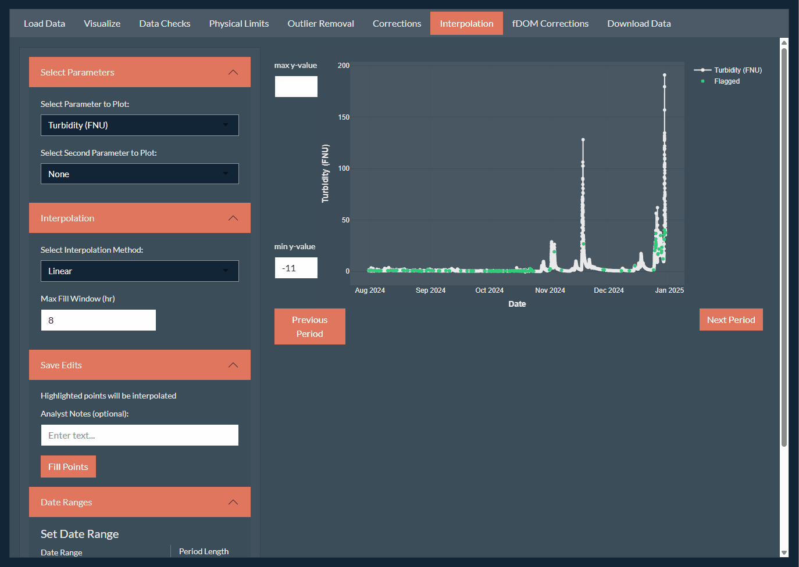
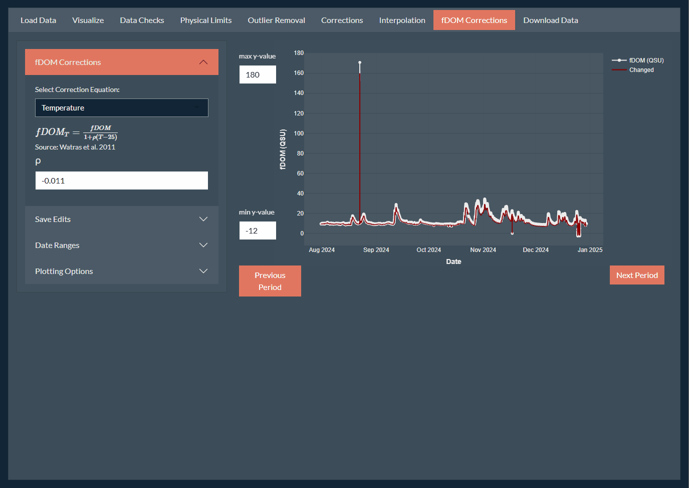
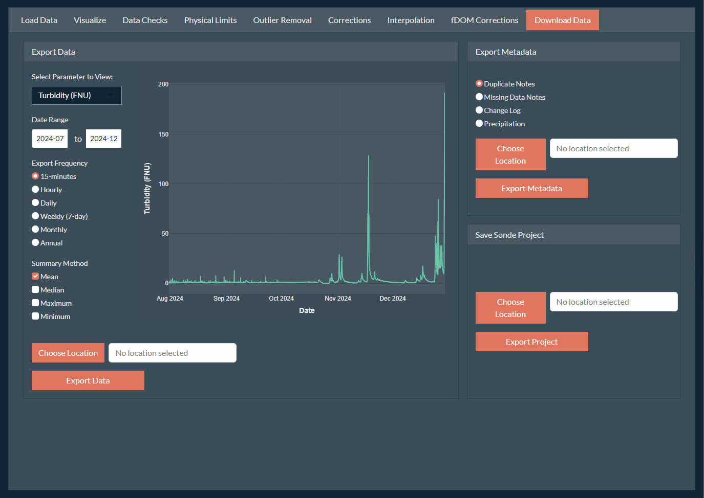

Overview
Correction of continuous water quality records can be a complicated task as the data can span a large period and can include several parameters which may require different types of corrections and checks. Additionally, some corrections (i.e., turbidity) may effect other parameters (i.e., fDOM).
We suggest using the following workflow as the default process for
correcting a complete water quality record of stream water quality using
the SondePolishR app. You may wish to modify for your own
specific workflows and needs.
TODO: include a workflow diagram here.
Throughout this tutorial we will refer to tabs and panels.
- Tabs are the different pages within the app that can be accessed using the names on the top of the app (i.e., Load Data, Visualize, Data Checks)
- Panels are the hideable sections with the sidebar on the left (i.e., Select Parameters, Save Edits, Date Ranges, Plotting Options).
Step 1: Open the App
-
Install the
SondePolishRpackage.pak::pak("wildfire-water-security/WWS-Node1-SondePolishR-sonde-qaqc") -
Run the follow code to open the app:
Step 2: Load Data
-
Specify data file locations. Upon loading the app, you should be on the Load Data tab. On the first card (1. Sonde Data), use the Browse button to navigate to the data file(s) you want to load. This step does not load the data. It simply tells the app were the data you want to load is located.
Specifically, this step will copy your selected files to temporary folder which is where the app loads the files from, so no changes will be made to your original data files.
If you have an existing project saved from previously using the app you can load this using the Existing Sonde Project option.
Otherwise, load one or more
.csvfiles using the Raw Sonde Data option.If you would like to add new raw files to an existing project, you may select both a project and a raw file. They will be merged together upon load.
-
Specify metadata file locations. Similar to locating your data files, you can select metadata files to add to your project. These include:
A field form (
help(example_fieldform)) which describes information from field visits and is used to calculate out of water periods.A calibration check file (
help(example_calcheck)) which contains data from field calibration checks used to make drift corrections.
Both files are optional but some app options will not work without them (e.g., viewing or removing out of water periods, better automated guesses for drift corrections).
-
Specify site code and site timezone.
Specify a site code or name which will be used for default file names and included in any data exports.
Select the appropriate timezone for your dataset. It is assumed that all files (raw data and metadata) use this same timezone.
If you’re loading a project and have previously specified this info you do not need to re-add it, this info gets saved within the sonde project and will be loaded with the rest of the data.
In the Load Data section enter the analyst name you want associated with the changes. This will be stored in the changelog and should be something you’re okay with being visible to anyone you share the project with.
-
Load the data. Use the Load Data section to load your selected data by clicking the Load Sonde Data button.
- The loaded files will remain unless a new file is uploaded. If you’re switching to a new site or data project, it’s recommended to clear your file uploads first using the Clear Uploads button which will clear all the file locations.
-
Load Precipitation Data. Precipitation data can be extremely helpful in making decisions about data corrections as it can help determine if observed spikes could have been caused by increased flows. There are currently three options for adding precipitation data to the project:
NASA Merra-2 (POWER): This dataset is available across a global scale at a resolution of 0.5 x 0.625 degrees available from 1981 to near real time at an hourly scale. Due to it’s global coverage, it may not capture small or localized events as well.
-
NASA NLDAS: This dataset is available across CONUS at a resolution of 0.125 × 0.125 degrees available from 1981 to near real time at an hourly scale. This data requires a token to access the data. See NASA Earthdata for directions on creating a token. See Using Precipitation Data for directions for securely storing this token where the app can access it.
Note: The API for this product can be unreliable, it make take a bit to load and you may need to try more than once.
User uploaded precipitation: You can also upload a custom precipitation file. See
help(example_precip)for details on the structure of this file.
If you choose to download precipitation data, input your site latitude and longitude, enter your earth data token (if applicable) and click Load Precipitation. This will download hourly precipitation data at the specified point over the date range of your data.

Step 3: Save Initial Project
While every effort has been made to prevent the app from crashing. It’s a new app, still under development and bugs can occur. It’s recommend to save your project frequently to prevent loss of work. To save your project:
Navigate to the Download Data tab on the far right.
-
Locate the Save Sonde Project section in the bottom right. Similar to uploading your data, use the Choose Location button to select where you want to save your project to and what name to use for your project. You can use the selector in the top to change your root directory. Click Save to confirm the save location.
Important: Your project is not saved at this point! You must also click the Export Project button to save the project to your specified file.
Click Export Project to save your project to the specified file.

Step 4: Initial Data Checks
After creating your project (or adding data to an existing project), it’s helpful to get a sense of what the data looks like before performing corrections.
Navigate to the Visualize tab. This tab used to provide summary data, access to metadata tables, undo edits, and visualize the data.
-
Remove known out of water periods. Out of water periods are times the sonde has been removed from the stream to download data or perform maintenance. We want to remove the regions as we know that those measurements will not be representative of the stream conditions.
If you have included field form metadata, you can visualize periods when the sonde was out of the water by going to Plotting Options and Show out-of-water periods. This will display the periods as red boxes on the plot.
-
To remove data from the highlighted periods, click the Flag OOW Periods button. This will remove measurements across all parameters during those periods.
Note: The measurement taken right before and after the sonde was removed from the water is also removed to prevent issues with time difference between the recorded time and the sonde time and short equilibrium periods. If no times are specified in the field form, the OOW period will default to the entire day of the field visit.
-
Check for data duplicates. While not the most common, duplicates in the data record can occur. This is typically due to:
Sonde replacement when the deployment isn’t immediately stopped on the old sonde.
Instrument malfunction.
You can identify duplicate records using the Data Checks tab. Any identified duplicates will be show as a table which describes the type of duplicate and the length. To address a duplicate click on a row of the table.
A plot showing the duplicated region will be displayed. You can choose to keep a specific set, average the duplicated region, or remove both sets. Add an optional note about why you chose the method you did, and click Resolve Duplicate.
Repeat these steps to resolve all duplicated regions of the data.
-
Document data gaps. Gaps in the data record are much more common and may be due to instrument maintenance, dead batteries, or instrument malfunction. Visualize any data gaps by selecting the Gaps table under Table Options.
- You can add a user note describing the reason for the data gap (if known), by double clicking the appropriate row under User Notes. This note will be saved in the metadata of the project and can be exported.
It may be helpful to examine the field notes while documenting data gaps. To view the field notes, go to the Visualize tab, and select Field Form under Table Options.
Briefly view all parameters. Before starting to correct data, it is often useful to briefly examine the data records to get a feel for your data. You can do this from the Visualize tab using the Select Parameters section to view each parameter.
Save the project. Navigate back to the Download Data tab and click the Export Project button to save a new copy of your project. When prompted if you want to overwrite your project you can safely overwrite it unless you want to keep a unedited copy of your project.
Step 5: Semi-Automated Data Cleaning
5.1 General Methods
Step 5.1.1 Remove any data outside of the sensor’s physical limits
Navigate to the Physical Limits tab and select your parameter under Select Parameters. This will display the data with the default range of the sensor (uses YSI EXO probe limits), with any data outside this range shown in red.
If there are any points outside of the physical limits you wish to remove, use the Save Edits panel to edit the data. A default note will indicate the limits used to remove data, but you may also add additional information. Click Remove Points to save the change.

Step 5.1.2 Remove Outlier Points.
Next we will review the record and remove points that are clearly bad, or mark points as questionable. The bad points will be flagged and removed from the dataset. The questionable points will be flagged in the final dataset.
-
Use a filter to auto-select likely bad points. Under select starting method. Typically the Hampel Filter method should work for most datasets. See
identify_outliers()for more details about selection methods.- You may need to adjust the window size (i.e., determines how many nearby points it looks at) or threshold (i.e., how “bad” a point has to be to be flagged) for your data. It will likely not be perfect, the next step is to manually review all these selections.
-
Adjust the plot to better visualize the data. See the section below, 5.2 Parameter Specific Considerations, for parameter specific considerations and recommendations.
Use the Date Ranges panel to set a period length and use the slider to view data by period.
Adjust the max y-value to the left of the plot to the range of your data. You can also remove the max y-value which will scale the plot to the range of the data being viewed.
You can also include an additional parameter as a second y-axis using the Select Parameters panel. This information can be helpful when trying to determine real peaks from spurious ones.

-
Review the selections. Review the entire record, one period at at time to check the points automatically selected.
To add a point not selected by the automatic method: Ensure your selection method in the Identify Outliers panel is “Add Bad”, then switch to either the Box Select or Lasso Select tools in the upper right corner of the plot to select the point.
To mark a point as questionable: Ensure your selection method in the Identify Outliers panel is “Add Questionable”. You can mark either unselected points or points auto-selected as bad.
To remove a selected point: Ensure your selection method in the Identify Outliers panel is “Remove Selection”, and select the point(s) you want to unflag. This will remove all flags (bad and questionable).

-
Apply flags to points. Once you’ve reviewed the record, you need to save the flags.
Toggle the option to View data by period to see the entire record again.
Go to the Save Edits panel. Here you can save both the bad points and the questionable points. For each flag, enter an optional note, and click Flag Points to save the flag to the selected points. The color of the points should change and no longer show (unsaved) in the legend.
Note: Once you’ve flagged the bad points, if you still have a starting method, the filter will identify new points that could be bad. You can use this as a double check that you selected all the appropriate points.

Step 5.1.3 Apply Additional Corrections.
There may be other issues in the dataset that need to be dealt with. These can be performed using the Corrections tab.
-
Additive: Used to apply a linear or absolute shift to a set of selected data. To apply this kind of correction, ensure you’re on the Additive option within the Corrections panel.
Use one of the selection tools to select the point or set of points you want to apply a shift correction to.
The app will guess at the shift value to apply, and show the shifted points in red.
Adjust the slope and intercept values in the Corrections panel until you’re happy with the shift.
Save the change using the Save Edits panel by clicking the Update Points button.

-
Drift: Used to apply a linear shift to an entire data file. This is sometimes needed when a sensor is swapped out and the data has a large jump due to drift in the calibration. To apply this kind of correction, ensure you’re on the Drift option within the Corrections panel.
In the Corrections panel, select the file you want to apply the correction to.
-
The app will guess at the amount of drift correction to apply.
If calibration check metadata is included in the project, it will use those values.
If there is no calibration check data available it will use the difference between the last point of the file and the first point of the next file.
Adjust the uncorrected and corrected values in the Corrections panel until you’re happy with the shift.
Save the change using the Save Edits panel by clicking the Update Points button.

-
Smoothing: Used to smooth out a segment of messy data due to optical interference. To apply this kind of correction, ensure you’re on the Smoothing option within the Corrections panel.
Use one of the selection tools to select the region you want to apply a smoothing correction to. The smoothed points will show on the plot as red points and line.
You can adjust the smoothing method and smoothing factor in the Corrections panel.
Save the change using the Save Edits panel by clicking the Update Points button.
Note: This will essentially “rewrite” whole sections of data, and therefore should be used carefully and sparingly to preserve trends that would otherwise have to be removed.

Step 5.1.4 Interpolate Missing Points.
Removing errant points will result in gaps within the data record. We can attempt to fill in these gaps using interpolation.
Navigate to the Interpolation page.
Select your interpolation method. For turbidity it’s recommended to use the Linear method which will use linear interpolation methods.
Adjust the maximum fill window. The default is to only fill gaps less than 8 hours. This default is likely fine for most systems. However, if you would like to be more conservative you can decrease this value. All interpolated points will be flagged in the exported data.
Toggle View the data by period and check that the interpolations look reasonable. Make sure to untoggle this option after checking or when you apply edits it will only apply to the section you’re viewing.
Confirm the interpolation changes using the Save Edits panel, clicking the Fill Points button. This will add the green points in the plot to the dataset for turbidity.

Step 5.1.5 Save Project.
- Save the project. Navigate back to the Download Data tab and click the Export Project button to save the edits to your project. When prompted if you want to overwrite your project you can safely overwrite it unless you want to keep a copy of your project prior to the current edits.
5.2 Parameter Specific Considerations
5.2.1 Recommended Display Parameters and Correction Order
| Order | Parameter | Period Length | Y-Max Limit | Second Y-Axis |
|---|---|---|---|---|
| 1 | Temperature | 30 days | N/A | Dissolved Oxygen |
| 2 | Dissolved Oxygen | 30 days | N/A | Temperature |
| 3 | Depth | 15 days | N/A | Precipitation |
| 4 | pH | 15 days | N/A | Precipitation/Depth |
| 5 | Specific Conductance | 10 days | N/A | Precipitation/Depth |
| 6 | Turbidity | 15 days | 5-10 NTU | Precipitation/Depth |
| 7 | fDOM | 15 days | 15-20 QSU | Turbidity |
5.2.2 Typical Corrections Needed by Parameter
Temperature is typically one of the easiest records to correct. Since it’s not an optical sensor, it tends to experience less errant peaks and the data itself tends to experience slow, smooth changes over time. It may still have the occasional errant peak and may still need a drift correction when a sensor is swapped out.
Dissolved Oxygen is similar to temperature. Since it’s not an optical sensor, it tends to experience less errant peaks and the data itself tends to experience slow, smooth changes over time. It may still have the occasional errant peak and may still need a drift correction when a sensor is swapped out.
Depth may experience errant peaks, particularly when the sonde is removed from the water, so removing out of water periods is critical. It may also require drift corrections or additive shifts depending on shifts in the calibration.
pH should also be relatively easy to correct. However, the pH sensors can go bad, so it’s important to look out for unrealistic values (i.e., pH < 4 or pH > 10). What’s unrealistic may vary based on your system. However, when sensors have previously gone bad we’ve observed reported values > 14 which is definitely unrealistic for any natural system.
Specific Conductance can suffer from quick spikes that are unrealistic and should be removed during the outlier correction methods. Another common issue to look out for is short periods of shifts where it appears the data record has been shifted down by a constant value, these should be adjusted using the additive corrections.
-
Turbidity is often one of the most challenging records to correct. Turbidity signals can reach very high peaks in a short time period. However, since it’s an optical sensor, peaks can also be due to optical interference (e.g., a leaf near the sensor). A critical part of the cleaning process for turbidity is to remove these “bad” spikes caused by interference while not removing real spikes in turbidity.
-
When removing outlier points in a turbidity record:
Be on the look out for peaks without a receding limb, suggesting the peak isn’t real.
There may be small spikes within the data record, if the auto-selection methods don’t flag them, leave these sorts of spikes that are less than ~2 FNU alone. There will likely be many and it should not impact the statistics on the dataset.
There may also be areas of low variability that select points that don’t appear to be peaks. You should remove the flags for these points.
-
-
Fluorescent Dissolved Organic Matter (fDOM) can also be one of the most challenging parameters to correct. It’s an optical sensor that is vulnerable to visual obstructions including high turbidity values. fDOM values are also temperature dependent, experiencing quenching impacts. Unlike the rest of the parameters, we will correct fDOM for both temperature and turbidity after the data has been cleaned. We will also use turbidity data to help determine which points to remove, so it’s critical to correct the turbidity record first.
-
When removing outlier points in a fDOM record:
Be on the look out for peaks without a receding limb, suggesting the peak isn’t real. Conversely, you may also see a drop without a “rising” limb, which is likely also not real.
There may be small spikes within the data record, if the auto-selection methods don’t flag them, leave these sorts of spikes that are less than ~3-4 QSU alone. There will likely be many and it should not impact the statistics on the dataset.
There many also be areas of low variability that select points that don’t appear to be peaks. You should remove the flags for these points.
When reviewing downward spikes it’s important to see if the downward spike is associated with a increase in turbidity. If this is the case, the drop is likely to be real unless the change is large. You can review this point after performing turbidity corrections and remove if it still appears errant.
-
Step 5.3 Apply fDOM Corrections
Ideally fDOM corrections should be applied using site specific corrections (see Akie et al. 2024). However, these correction factors can be labor and time intensive to collect. Existing work suggests that for low turbidity values (< 300 FNU), a standard correction factor may be used.
Note: fDOM should be corrected for temperature before turbidity and the app will not apply a turbidity correction to data that has not be temperature corrected. Additionally, correction will only be applied to data that has not been corrected.
Correct fDOM data for temperature. In the absence of a site-specific correction factor, you can use a general factor suggested by Akie et al. 2024. To apply the correction go to the Save Edits panel and click Update Points.
-
Correct fDOM data for turbidity. Turbidity corrections can be quite complex and there have been a number of attempts at devising equations to correct for turbidity. The module currently supports five different correction options:
None: Skip turbidity corrections, more than temperature, turbidity corrections are thought to be site specific, particularly at high turbidities.
Inverse Polynomial: A equation suggested by Fleck et al. 2026 which applies a correction factor based on a quadratic equation with turbidity. This was found to fit similarly to more complex, five parameter models. Default values are the values reported by Fleck et al. 2026.
Exponential (1-parameter): One of the initial correction equations proposed by Downing et al. 2012 which uses a single correction factor. The default correction factor comes from Akie et al. 2024 as the value for generic Elliot silt loam which was suggested to be appropriate to use for turbidity values below 300 FNU.
Exponential (2-parameter): A slightly modified version of the original 1-parameter model proposed by Fleck et al. 2026. This model works well for lower turbidity values but can have a poor fit at higher turbidity values (>100-200 FNU). Default correction values come from Fleck et al. 2026.
Exponential (5-parameter): As an approach that would work across the full turbidity range, Fleck et al. 2026 proposed a 5-parameter model which fit high turbidity data well, but was complex to fit. Default correction values come from Fleck et al. 2026.
To apply the correction go to the Save Edits panel and click Update Points.

Step 6: Export Data
After you’ve performed any cleaning steps, the last step is to export your data so a more usable format.
-
Export cleaned data: Export the data in the Export Data card on the Download Data tab. The selected data will be saved to the specified file as a
.csvfile. You have several options when exporting the data:Date Range: If you only want to export data for a certain date range, you can specify that here. By default the entire date range will be exported.
Export Frequency: If you would like the data summarized into a different time period (e.g., hourly, daily, monthly) select that here. The default is the interval of the data.
Summary Method: When summarizing data, how would you like the data summarized. You may select more than one method. The output table will have each parameter name appended with the function used to summarize.
Note: The export function will summarize the data by the requested interval. If you export the data at the measurement interval, this means that the duplicates will be summarized using the selected summary method.
After specifying the data you want to export, click the Choose Location button to select where you want to save your data to and what name to use for your data. You can use the selector in the top to change your root directory. Click Save to confirm the save location.
Important: Your data is not exported at this point! You must also click the Export Data button to save the data to your specified file.

-
Export metadata: Export the project metadata in the Export Metadata card on the Download Data tab. This section is used to export metadata stored within the project to a
.csvfile. There are four different files that can be saved:Duplicate Notes: Exports the table describing the data duplicates with any user added notes.
Missing Data Notes: Exports the table describing the data gaps with any user added notes.
Change Log: Exports the change log describing all the changes made to the data.
Precipitation: Exports the hourly precipitation data.
After specifying the metadata you want to export, click the Choose Location button to select where you want to save your data to and what name to use for your data. You can use the selector in the top to change your root directory. Click Save to confirm the save location.
Important: Your metadata is not exported at this point! You must also click the Export Metadata button to save the metadata to your specified file.